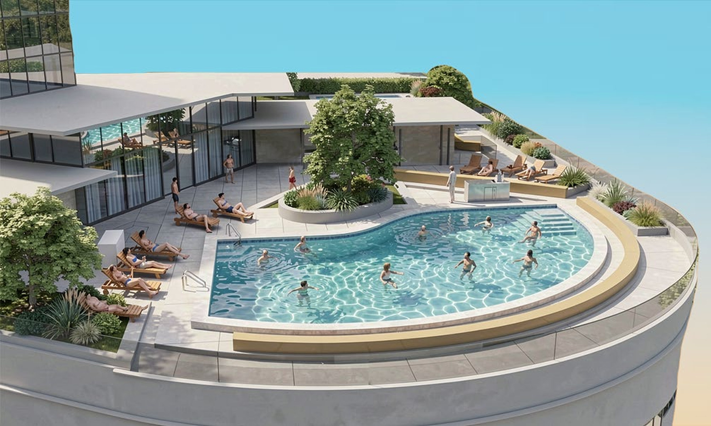
Amenity Deck Engines
A parametric workflow for a high-rise podium deck, balancing complex site constraints—mechanical clearances, egress cores, and hardscape—with three distinct privacy zones.
The initial engine deployed a six-phase pipeline: extracting Rhino boundary geometry, buffering fixed obstacles, and using a straight-skeleton algorithm to seed pool locations based on target deck-to-water ratios. A weighted Voronoi power diagram then resolved spatial overlaps into obstacle-clipped cells to automatically generate grid-aligned basins.
While mathematically solved, the Voronoi cells proved spatially arbitrary. Instead of forcing the output, the power diagram was repurposed as an analytical overlay, revealing exactly where programmatic density naturally wanted to settle.
Using hand-tuned zonal curves derived from this initial analysis, a streamlined secondary definition handles the downstream geometric execution—building site-aligned lap basins, stepped coping, and integrated soaking pools directly from spatial intent. The algorithm evolved from an automated author into an executive instrument.
*The two photoreal perspectives are Rhino renders finished with AI enhancement. Every drawing and diagram here is output from the definitions.
The initial engine
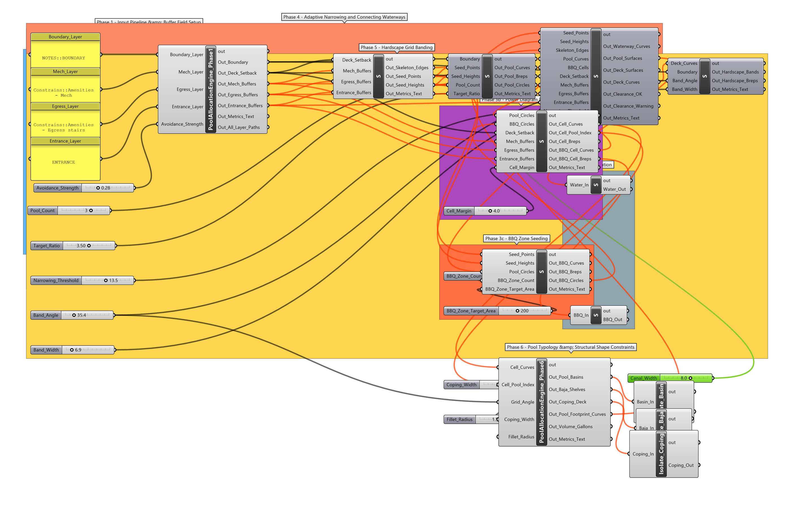
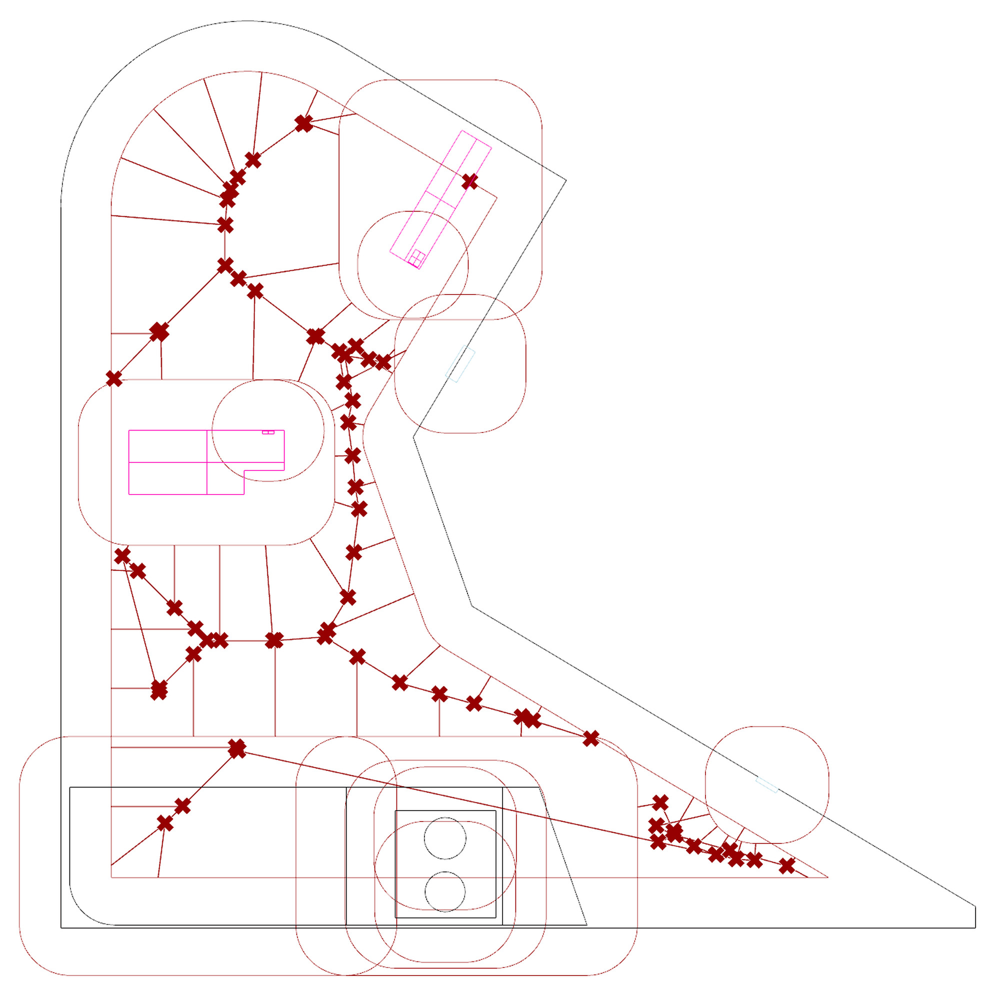
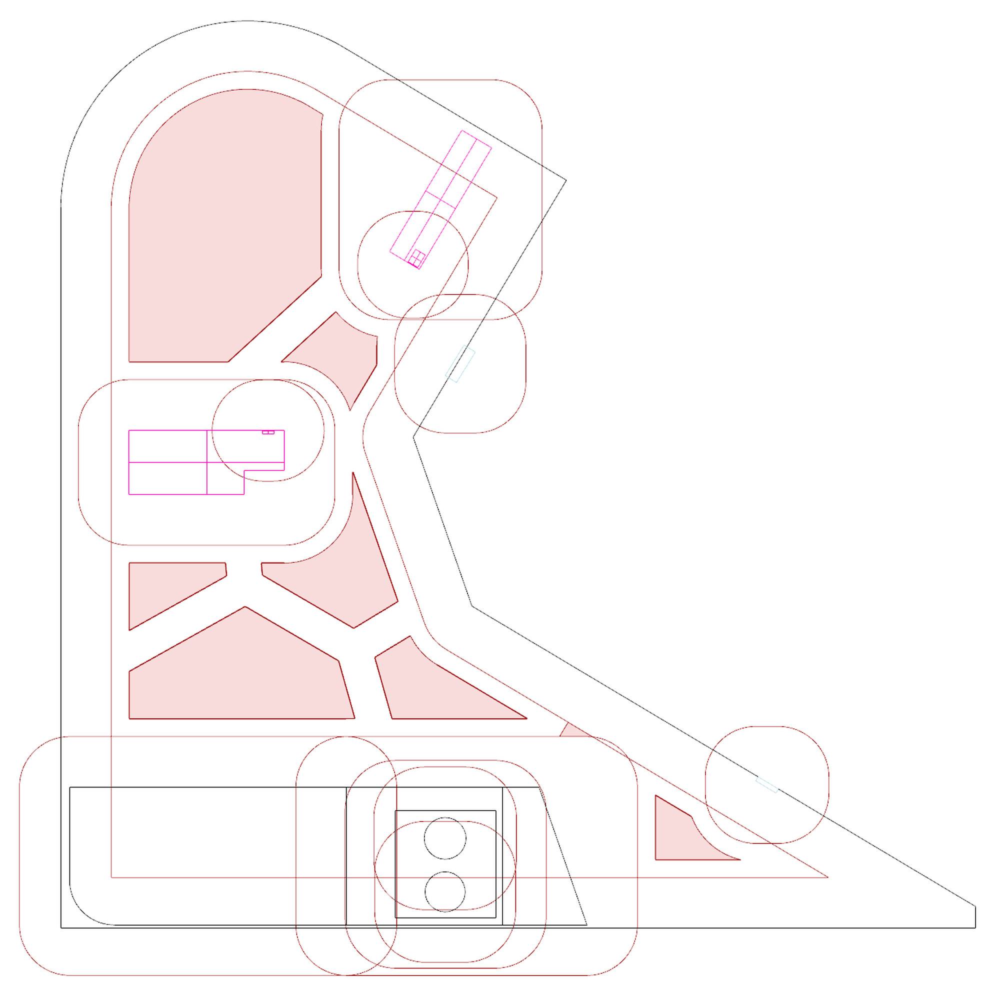
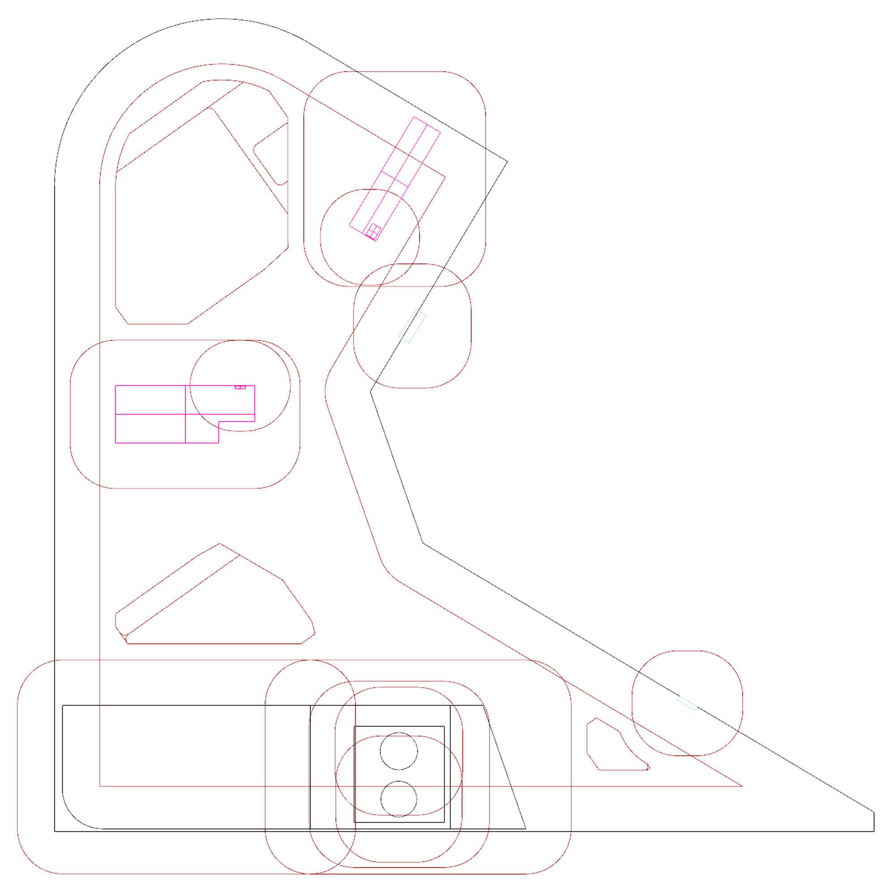
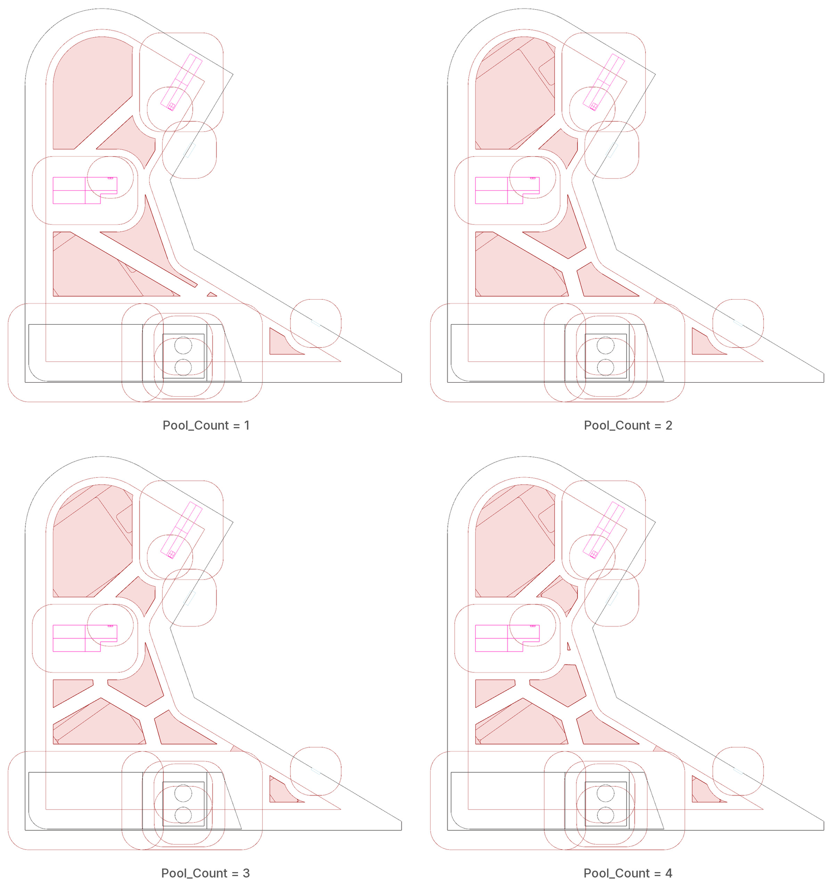
The secondary definition
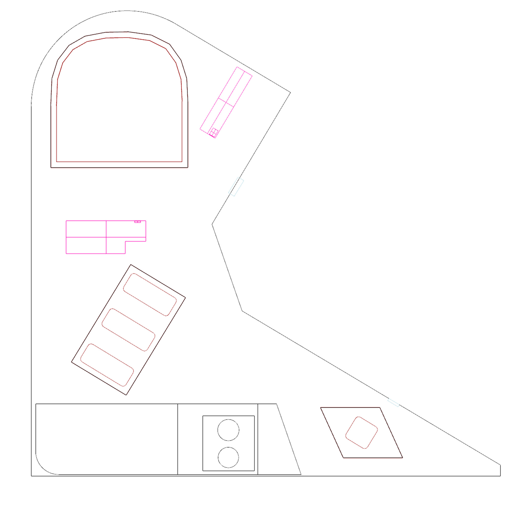
The deck
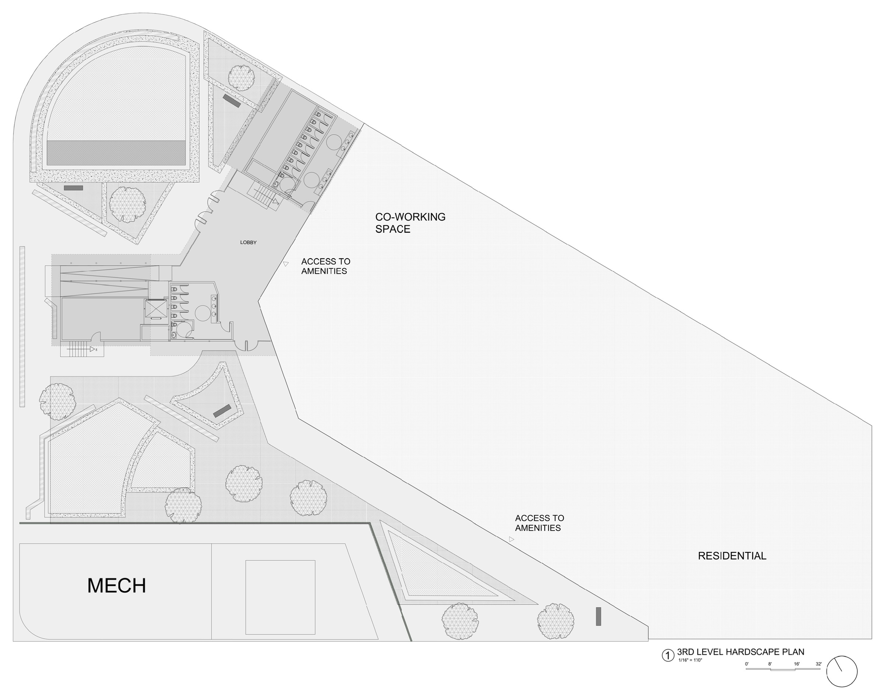
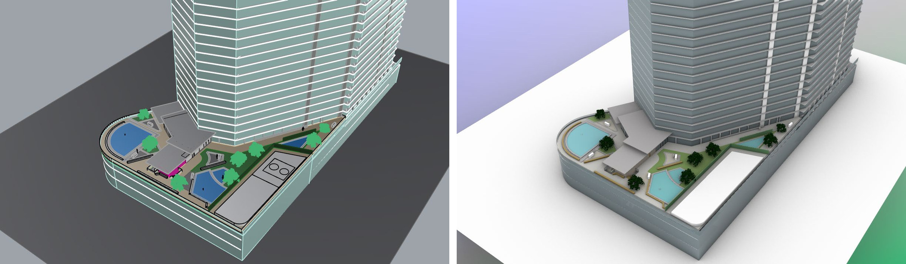
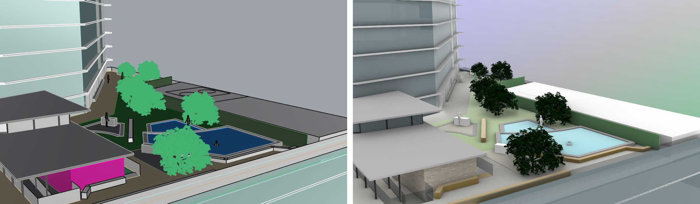
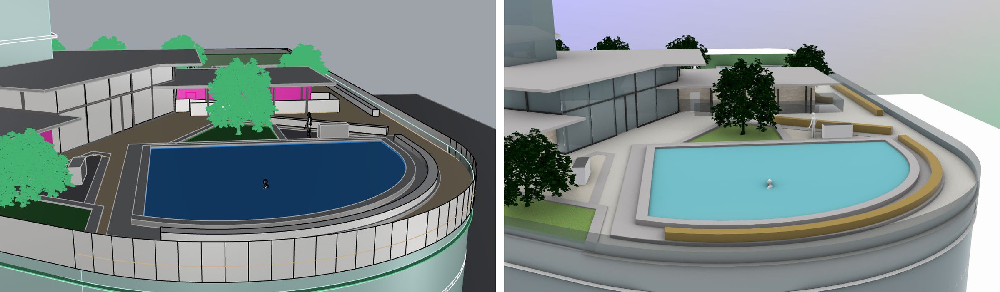
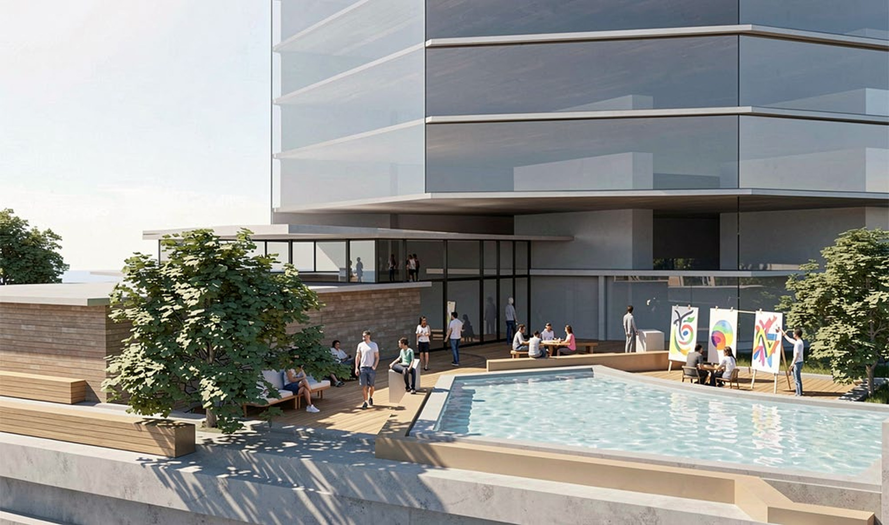